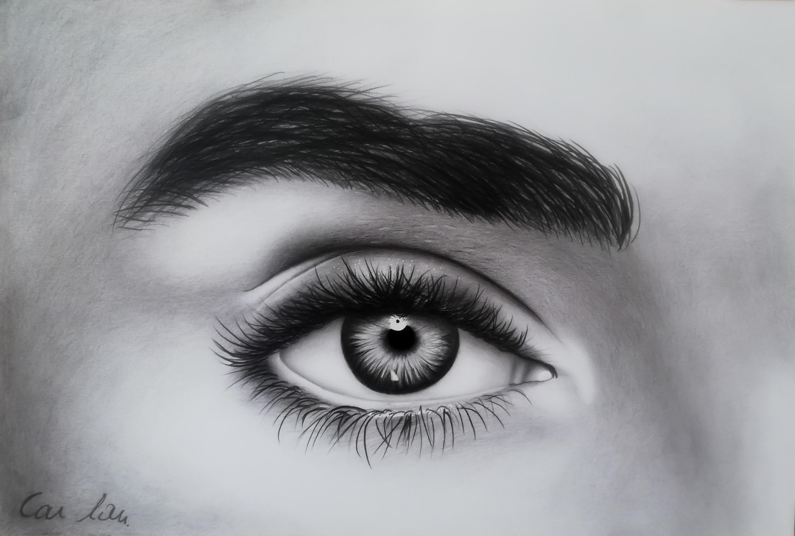

How to Draw Realistic Eye / Shading / Blending Techniques
In this video I am going to show you how to draw realistic eye.
WatchHow to Draw Realistic Lips
In this tutorial ,I am going to draw face anatomy and sense organs .This video is the beginning of the tutorial.
Watch